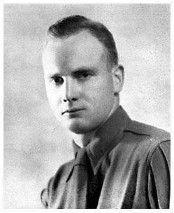

123
WILLIAM SMOOT4
AND
HIS DESCENDANTS
William Smoot, son of Thomas and Elizabeth (Barton) Smoot, was born in William and Mary Parish, Charles County, Maryland, towards the latter part of the seventeenth century, being a minor at the death of his father in 1704. He received 200 acres of unnamed land by the will of his parent, but somehow at his death his estate seemed to have consisted chiefly of personal property. The name of his wife is unknown.
Children of William Smoot
1. Thomas Smoot, no further record.
2. John Smoot married Mary ----. q.v.
The will of William Smoot was dated November 9, 1726, and proved in Charles County November 18, 1726, by Thomas Morris, Elizabeth Weedon, and Thomas Hawton. He bequeathed his son Thomas personalty at the age of 21 years and placed him under the guardianship of Mark Penn, naming the latter as the executor of his estate. To his son John, he devised personalty at the age of 21, and placed him under the guardianship of John Wilder.
The inventory of his personal estate was taken on March 15, 1726/27, and appraised at £30/13/7 by William Hawton and Robert Yates. William Barton and Thomas Smoot signed as the nearest of kin, and Thomas Smoot as the greatest creditor.
Prior to the inventory, however, his will was presented to the court on November 19, 1726, by Mark Penn as the executor, and Matthew Dutton and William Cage as his sureties.
John Smoot5
(17-- - 1747)
John Smoot, born about 1712, was a minor at the death of his father William Smoot in 1726, and according to the terms of his parent's will, he was placed under the guardianship of John Wilder. The father of the boy apparently lost his land early in life and inasmuch as his inheritance was small, John Smoot at majority moved westward to the frontier of
124
the Province where land warrants were freely granted to encourage settlement.
His migration can best be placed at 1730 and therefore he was one of the pioneers of what is now Montgomery County. In 1732 he patented "Bell's Design" of 100 acres, and in the same year with J. Collier and J. Holmard he patented "Partnership" consisting of 50 acres, and then "Elizabeth" of 50 acres--all three tracts then lying in Prince George County. He married Mary ----, whom he perhaps met on the frontier.
Children of John and Mary Smoot
1. John Smoot. q.v. 2. Edward Smoot, in 1768 a resident of Craven Co., S. C., sold "Crumford", lying on west side of Seneca Creek to Joseph Ward, of A. A. Co.
3. Mary Smoot.
4. Barton Smoot, posthumous.
John Smoot with Thomas Charter was bondsman when Mary Snow, of Prince Georges County, administered on the estate of John Snow. On March 20, 1738, John Smoot conveyed "Partnership" and "Elizabeth", that is, his share in the two tracts, to James Holmead. At that time no wife waived her dower. John Beale and John Hepburn witnessed the conveyance.
The will of John Smoot was dated October 20, 1747, and admitted to probate in Prince Georges County by Solomon Stimton, James Harrison, and Thomas Birdwistle. He devised his son John 100 acres of "Beall's Design", his son Edward 100 acres of "Crumford", and various personalty to his wife Mary and his daughter Mary.
The inventory of his personal effects was taken on June 28, 1748, with Jeremiah Neal and Matthew Edwards signing as kinsmen, presumably his widow's relatives or husbands of unproved sisters, as it is believed that he had no blood kinsmen living at that time in the western part of the Province. His widow signed the papers as executrix, with John Crompkin and James Harrison as her sureties.
His widow later married Thomas Fletshall who rendered an account on the estate during 1752 in Frederick County. At the June Court of 1755 John Smoot Jr. petitioned the court stating that Thomas Fletchell had the estate of Edward and Barton Smoot in his hands and "is now going to move to Carolina", therefore prayed partition of the estate on behalf of the two orphans.
125
John Smoot6
(17-- - 1808)
John Smoot, eldest son of John and Mary Smoot, was born in Prince Georges (Montgomery) County, Maryland, about 1738, or perhaps a little earlier as he was of sufficient age in 1755 to petition the court for a division of his father's estate. In 1753 he sold to his step-father Thomas Fletcher (the spelling occurred in various ways on the records) "Beal's Design" for 3,000 pounds of tobacco. The tract adjoined "Conclusion" and "Crumford". Shortly after he demanded the partition of his father's estate on behalf of his younger brothers, it is believed that he, with a party of other adventurers, migrated to what was then Orange County, later Hampshire County, Virginia. His will was dated December 11, 1807, and proved in Hampshire County on April 18, 1808, naming the following children.
Children of John Smoot
1. Barton Smoot.
2. Solomon Smoot. q.v.
3. William Smoot.
4. Jacob G. Smoot married Catherine Shank. q.v.
5. James Smoot.
6. Joshua Smoot married Mary Haines q.v.
7. Joseph Smoot.
8. Nancy Smoot.
9. Hironage Smoot.
10. Susannah Smoot.
11. Lucretia Smoot.
12. Charity Smoot.
13. Priscilla Smoot.
Solomon Smoot7
(17-- - 1828)
Solomon Smoot, son of John, of Hampshire County, Virginia, migrated to Harrison County, Indiana, where he died during the early part of 1828.
Children of Solomon Smoot
1. Elizabeth Smoot.
2. John Smoot married Elizabeth Hendershott. License Nov. 17, 1825, Harr. Co., Ind.
3. Barton Smoot married Hannah Doney. License Dec. 31, 1829, Harr. Co., Ind.
4. ---- Smoot married ---- Burke.
126
The will of Solomon Smoot was dated February 20, 1828, and probated March 8, 1828, in Harrison County, by George W. Craner and Isaac Helms, with Henry Barricklow as the executor. He named his three children, Betsy, John, and Barton, and a grandson Solomon Burke. None of his children were heads of families in Harrison County at the 1830 census.
Jacob G. Smoot7
(1790 - 1850)
Jacob G. Smoot, son of John, was born in Hampshire County, Virginia, about 1790. He migrated to Montgomery County, Ohio, and settled on Sugar Creek. He married Catherine Shank who at the census of 1850 gave her age as 56 years and birthplace as Ohio. Eight children were born but only five matured. Jacob G. Smoot died April 1850, a resident of Green Township, Shelby County, Ohio.
Children of Jacob and Catherine (Shank) Smoot
1. James W. Smoot, born 1822, married Jemina Dorsey. q.v.
2. Mary Smoot, born 1824.
3. Sarah A. Smoot, born 1826.
4. J. H. Smoot, born 1833.
5. -------.
Joshua Smoot7
(1790 - 18--)
Joshua Smoot, son of John, was born about 1790 in Hampshire County, Virginia, and married Mary Haines sometime before 1817. The following children were born--Samuel; Walker; Henry; William; Minor Barton; Sarah; Eveline; James Rezin (q.v.); Julia; and Harriet. During the War of 1812 he served in the year 1815 as a private in Captain Jonathan Pugh's Company, 114th Virginia Regiment, commanded by Major Poston. He later settled in the northern portion of the State and became one of the founders and important citizens of the town of Newburg.
James W. Smoot8
(1822 - 18--)
James W. Smoot, son of Jacob and Catherine (Shank) Smoot, was born about 1822 in Montgomery County, Ohio. In 1847 he married Jemina, born 1829 in Shelby County, Ohio, the daughter of John and
______________
Note: Marriage licenses of Harrison County, Ind., show one issued Oct 8, 1822, to Nathan Smoot and Elizabeth Helm.
127
Catherine (Conroy) Dorsey.1 The following children were born to this union--Sarah C., born 1850, married C. Offenbacher; Mary L. B. married David Mahan; Eva A.; and Ora E.
James Rezin Smoot
(1834 - 1905)
James Rezin Smoot, son of Joshua and Mary (Haines) Smoot, was born June 23, 1834, in Hampshire County, Virginia. On March 5, 1854, he was married to Susan Howard who was born on February 18, 1830.
Children of James Rezin and Susan (Howard) Smoot
1. Mary E. Smoot, born Apr. 27, 1856, married S. C. Hartley. Issues: Pearl; Ray; and Earl.
2. Ethel O. Smoot, born Apr. 22, 1862, married James Berthy. Issues: Maude; James; Howard; Mary; and Margaret.
3. John W. Smoot, born Apr. 25, 1864.
4. Charles Howard Smoot married Alice L. Paul. q.v.
5. Hattie D. Smoot, born Sept. 21, 1868, died 1933, married June 6, 1889, C. F. Hammond.His first wife died on March 15, 1884, and the next year he married Susan Powell, born 1860.
Children of James Rezin and Susan (Powell) Smoot
6. J. Ray Smoot, born 1886, married 1909 Mollie Fromhart. Issues: James; Mary Jane; Walter Thierman.
7. Grace Smoot.
8. Clara Smoot, born 1891, married 1935 C. F. Hammond.
9. Calvin Smoot, born 1894, married 1917 Virginia Wright. Issues: Henrietta, born 1919; and Harold Calvin, born Mar. 1925. 10. Cora Smoot, born 1898, married 1921 Gay Edward Williams. Issues: Edward Smoot, born Feb. 1923.
11. Earl McKinley Smoot, born Oct. 29, 1900, married 1925 Mabel Bolton.
12. Edgar Powell Smoot, born Nov. 1905, married Dec. 1923, Alma Sager, born 1906. Issues: Edgar Powell Smoot, born Jan. 1928.
James Rezin Smoot became a leading citizen of his State and for a number of years was president of the First National Bank of Newburg, West Virginia. He died in 1905; his widow survived until 1935.
________________
1 For the ancestry of John Dorsey, see "Anne Arundel Gentry", by Newman.
128
Charles Howard Smoot9
(1866 - 1930)
Charles Howard Smoot, son of James Rezin and Susan (Howard) Smoot, was born March 23, 1866, and died February 28, 1930. On June 12, 1890, he married Alice Lorena Paul.
Children of Charles and Alice (Paul) Smoot
1. Raphael Smoot, born and died 1891.
2. Charles H. P. Smoot, born 1893, died 1896.
3. Bathia Smoot, born Jan. 7, 1901.
4. Ralph Omar Smoot, born Feb. 17, 1907, married July 1933, Virginia Barton Tincher, born 1911. Issues: Ralph Tincher, and James Paul.
Ralph Omar Smoot, the only surviving son, was born at Allingdale in Nicholas County, West Virginia, and attended Davis and Elkins College at Elkins, afterwards graduating from the School of Forestry at the University of Michigan. Since his graduation he has spent three years in the forestry service of his State and in 1936 was appointed Ranger of the National Forest of the Cheat District of West Virginia.

Ralph Omar Smoot
United States District Forest Ranger, Cheat District, Monongahela National Forest,
of the Barton-Smoot branch, and tenth in descent from William Smute.
Back Next Search Index
"The Smoots of Maryland and Virginia" by Harry Wright Newman, originally published privately in Washington D.C. in 1936. This edition edited and published by Frederick K. Smoot and the Smoot Family Association, copyright 2001.
You are Our Reader Since 14 February 2001
Last updated
Please Email Additions and/or Corrections to Webmaster